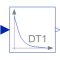

DerivativeApproximated derivative block |

|
Information
This information is part of the Modelica Standard Library maintained by the Modelica Association.
This blocks defines the transfer function between the input u and the output y as approximated derivative:
k * s
y = ------------ * u
T * s + 1
If you would like to be able to change easily between different
transfer functions (FirstOrder, SecondOrder, ... ) by changing
parameters, use the general block TransferFunction instead
and model a derivative block with parameters
b = {k,0}, a = {T, 1}.
If k=0, the block reduces to y=0.
Parameters (5)
| k |
Value: 1 Type: Real Description: Gains |
|---|---|
| T |
Value: 0.01 Type: Time (s) Description: Time constants (T>0 required; T=0 is ideal derivative block) |
| initType |
Value: Modelica.Blocks.Types.Init.NoInit Type: Init Description: Type of initialization (1: no init, 2: steady state, 3: initial state, 4: initial output) |
| x_start |
Value: 0 Type: Real Description: Initial or guess value of state |
| y_start |
Value: 0 Type: Real Description: Initial value of output (= state) |
Outputs (1)
| x |
Type: Real Description: State of block |
|---|
Connectors (2)
| u |
Type: RealInput Description: Connector of Real input signal |
|
|---|---|---|
| y |
Type: RealOutput Description: Connector of Real output signal |
Used in Components (3)
|
Modelica.Blocks.Examples.NoiseExamples.Utilities.Parts
Simple position controller for actuator |
|
|
Modelica.Blocks.Continuous
PID-controller in additive description form |
|
|
Modelica.Blocks.Continuous
P, PI, PD, and PID controller with limited output, anti-windup compensation, setpoint weighting and optional feed-forward |